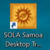
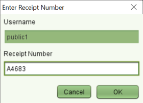

Users that have been assigned a SOLA username and password by the Public Access Computer Administrator and have obtained a receipt number from the cashier will be able to use those details to login to SOLA. Use the SOLA Desktop Shortcut to launch SOLA.

SOLA Desktop Shortcut
Important: Public users must access SOLA using their assigned username and password. If SOLA is open when you get to the public access computer, close it using File > Exit menu or by clicking the X in the top left window before proceeding to login to SOLA.
At the login window, enter your username and password credentials. If successfully validated, you will set the Enter Receipt Number window where you will be able to enter the receipt number you obtained from the cashier.

Receipt Number on Login
SOLA will open and you can view the map, search and print survey documents or update your user profile and password.